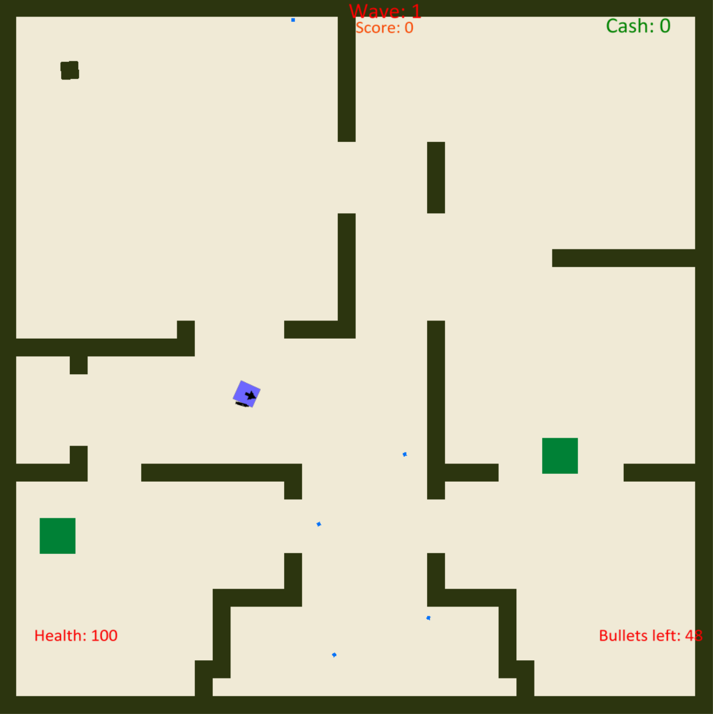
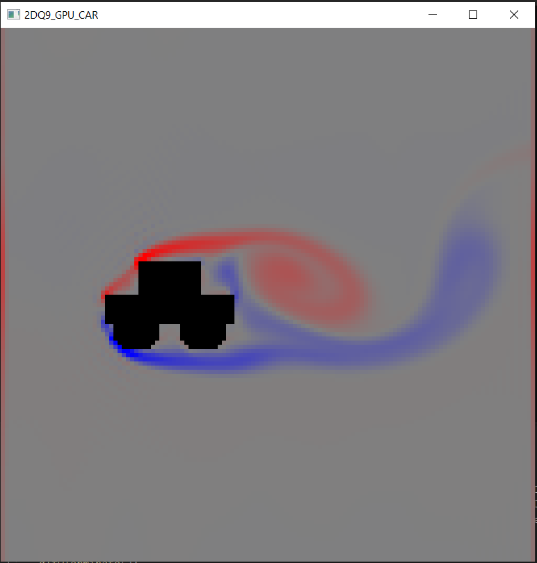
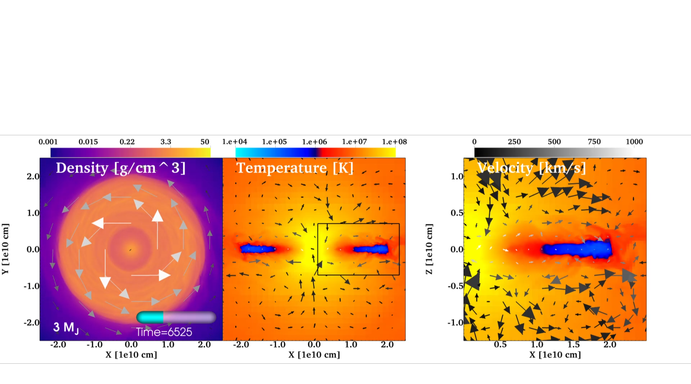
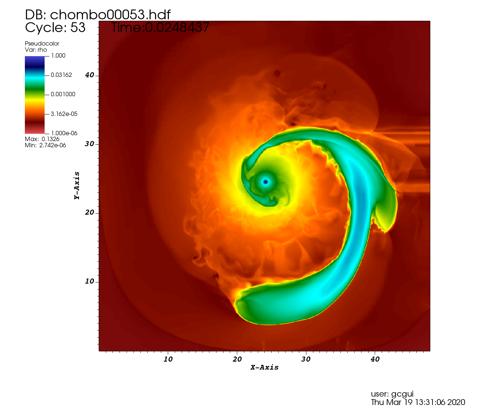
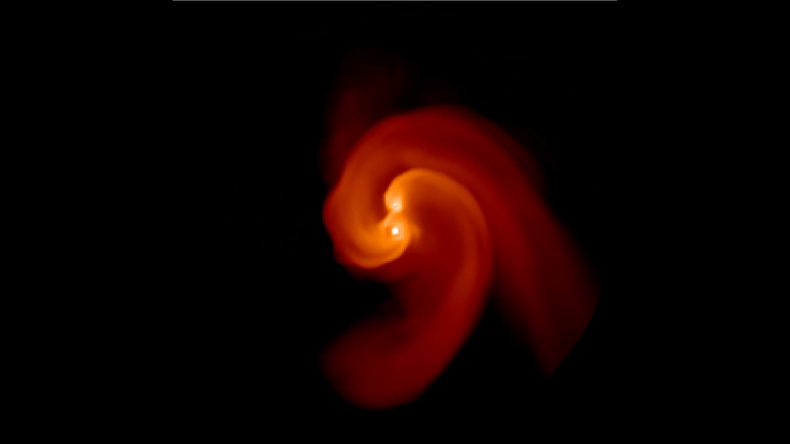

Gabriel Guidarelli
Home
Research
Resume
Contact
Research and Projects
1 / 7
2 / 7
Your browser does not support the video tag.
3 / 7
Your browser does not support the video tag.
4 / 7
5 / 7
Your browser does not support the video tag.
6 / 7

7 / 7

❮
❯


